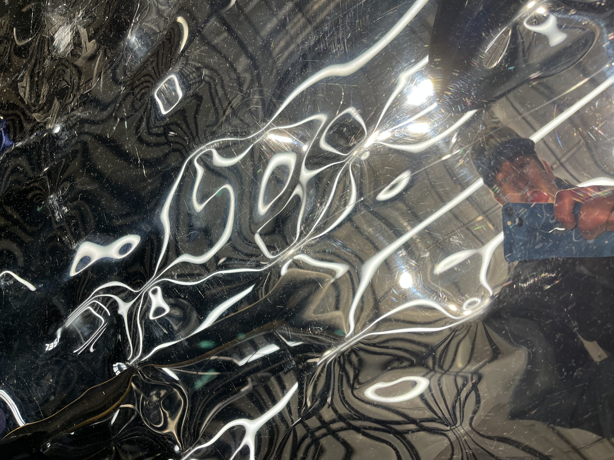
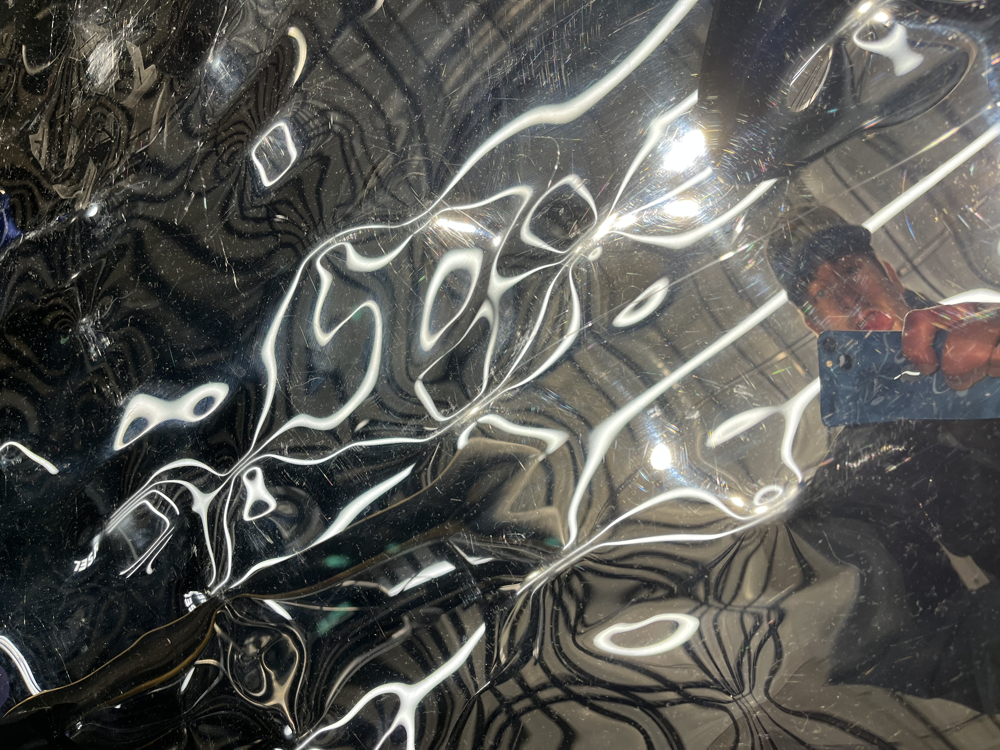

Conclusion
Since I like to think of my Practice as forward thinking, I shall conclude my report by talking briefly on how I intend to take my practice forwards. I think I am often afraid to delve too deep into an interest (within a project), I feel sometimes that I could get lost looking into a piece of technology that intrigues me, but I want to embrace this in future projects, to put in as much effort as possible to learn how I can manipulate a mechanism to be used for a completely different purpose – A détournement, (As Guy Debord might have said) perhaps!
Every day, more material is put out into the world and sometimes I think, to find a solution to modern day problems and briefs, we must look backwards and re-use existing material to answer, for everything good is already out there, it’s just about giving it to people in a medium they understand. And I think that’s why I feel so strongly about letting my design and personal interests bleed together – the answer is often hidden in a different form, within a different discipline or interest.
Image: Photograph I took in a mirror that I thought looked cool :)